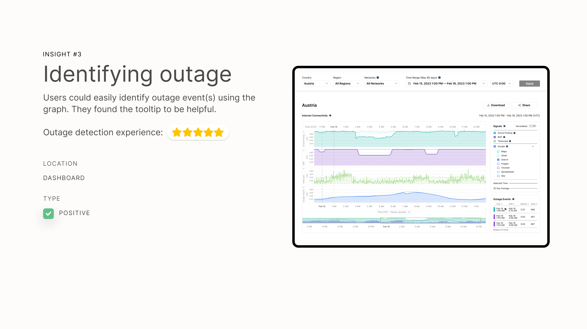
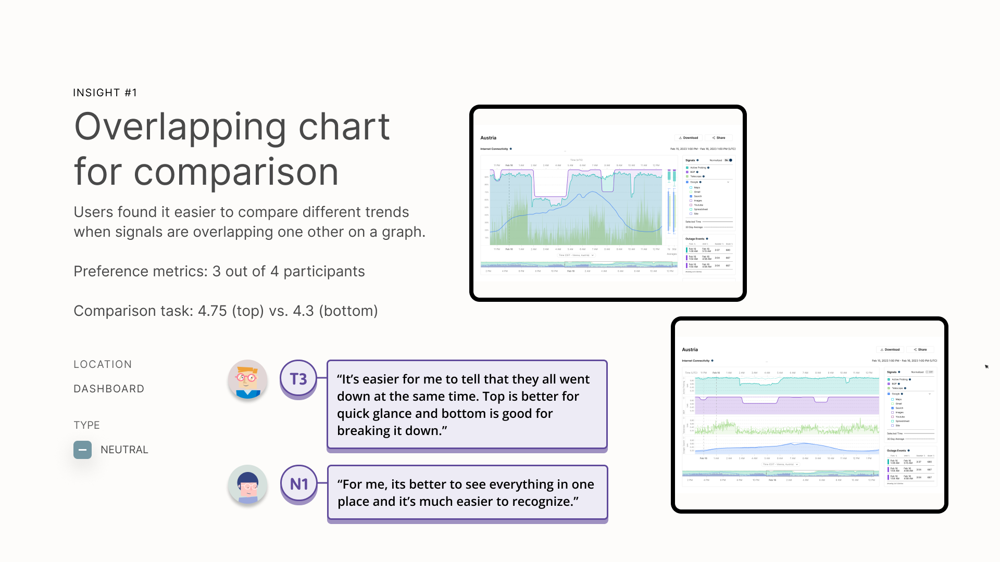
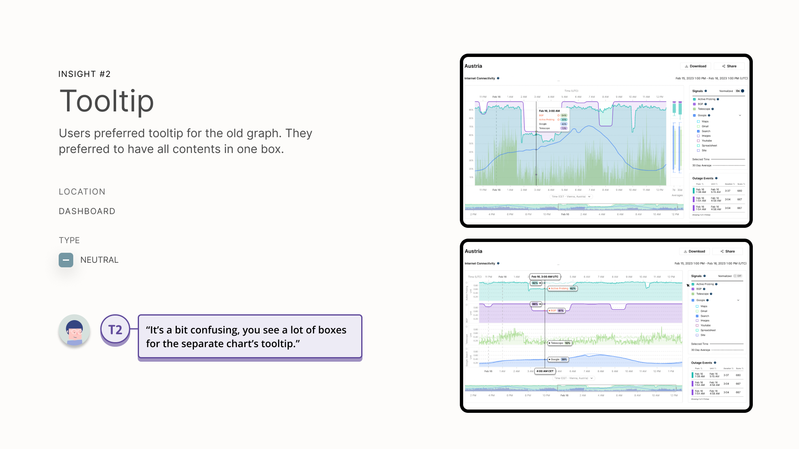
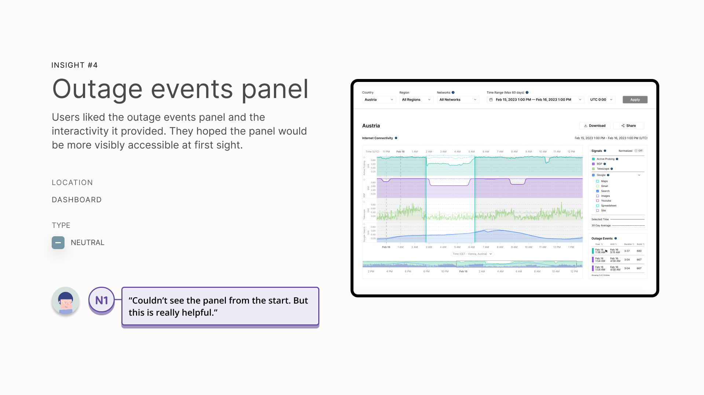
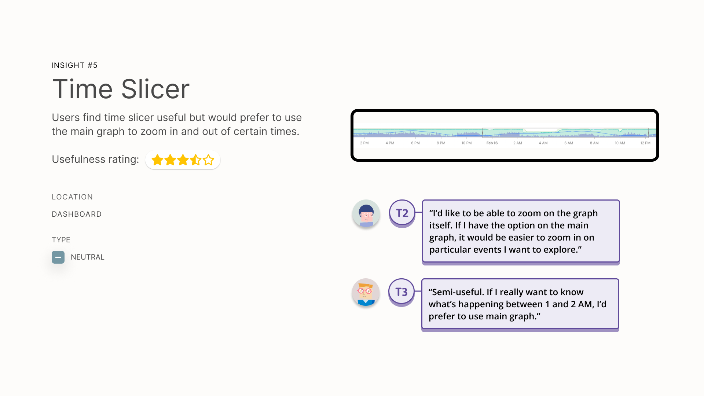
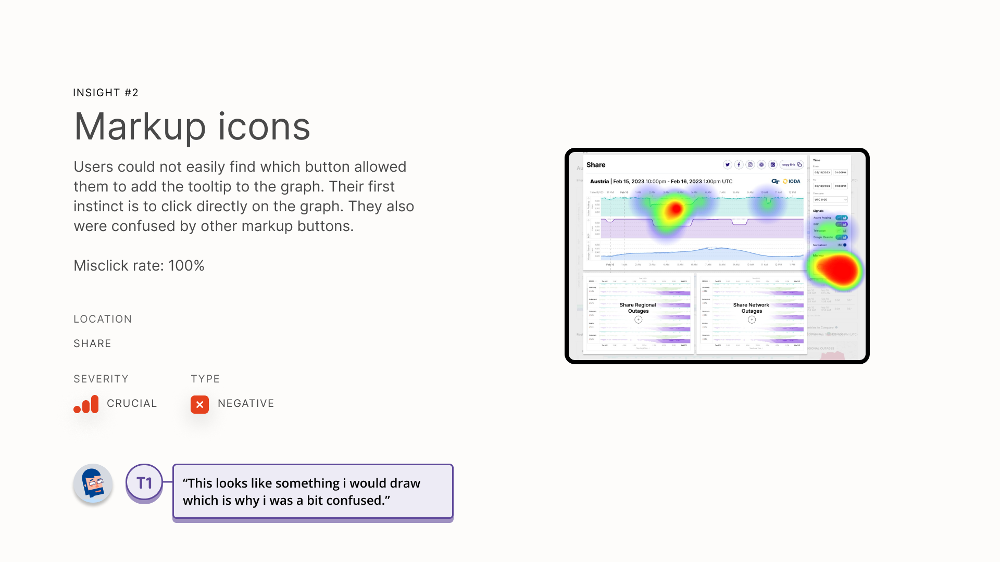
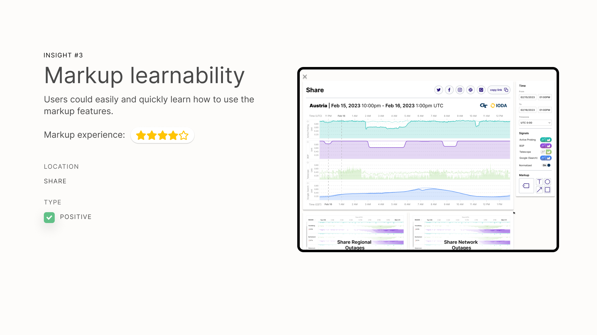
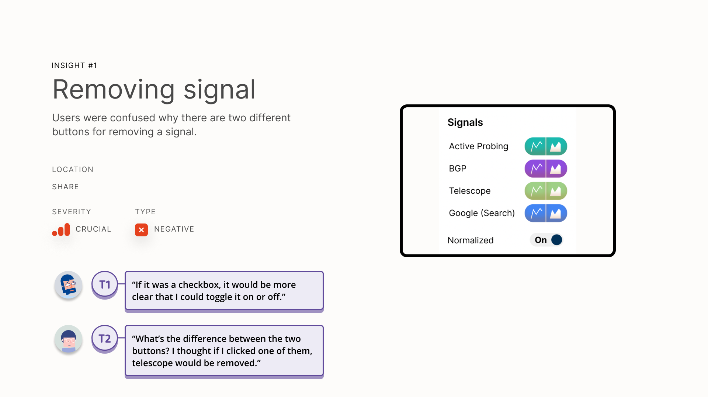
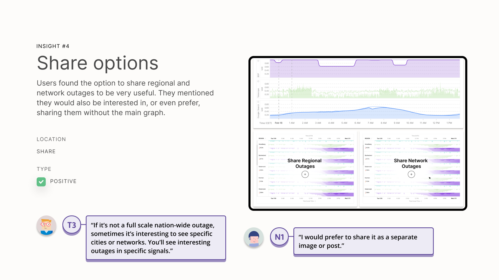

IODA is a dashboard that provides real-time detection and analysis of internet outages, offering valuable insights into the stability and performance of internet connectivity across the globe. The project, run by the Internet Intelligence Research Lab at Georgia Tech, combines multiple data sources and automated analysis to identify outage events and generate relevant alerts. These outage events and corresponding signals are displayed on interactive graphs, enabling users to gain near-real-time insights into internet outages. Our users include journalists, activists, and connectivity experts.
User Research
During the user research phase, we analyzed user surveys and interviews, conducted a competitive analysis, examined Twitter analytics and an existing heuristic evaluation to gain further insights.
As a UX Designer on this project, I focused on the redesign of the Internet Connectivity view, as well as a new edit and share feature. For these features, our research revealed valuable insights, including users' desire for a more easily interpretable signal chart, free from visual noise. They also emphasized the importance of historical averages of signals and on-screen guidance, such as tooltips, to aid in understanding the data presented.


Research Findings: Internet Connectivity View & Edit/Share Feature


(Re)design
Internet Connectivity View
In redesigning the Internet Connectivity view, I paid special attention to accessibility, as well as improving user interpretation of signals and identification of outages. The color selection began with semantic and brand association with signals that might be more familiar to users. For example, using a brand color to represent the Google signals, while veering away from colors that might be mistaken by users for alerts, such as red. From there, we ran color accessibility tests with a multitude of palettes, until we found a cool-tone color scheme that maintained visibility with every color blindness test.


The redesign of the actual graph involved research on graph types and legibility, as well as many iterations. A goal for the graph was for users to be able to spot where a potential outage may be occurring, once they have a baseline understanding of a signal’s pattern.


Resulting Design
For the resulting design of the Internet connectivity view, we implemented new signal colors and tooltips to improve users' ability to interpret the signals effectively. To address the need for historical averages, we incorporated this data into the redesigned chart, providing users with a benchmark for comparison. Additionally, we introduced alert bands to highlight abnormal signal behavior, enabling users to easily identify outage events and potential connectivity issues.


Share and Edit Feature
Another key aspect of the design was the new share and edit feature. Users expressed the importance of easily sharing outage information with others. We implemented functionality that allowed users to share regional and network outages, facilitating better communication and collaboration among users experiencing connectivity issues.

User Testing and Findings
During the user testing, participants provided valuable feedback on the redesigned features. They favored the overlapping chart design for comparing signals, citing its improved readability and compact tooltip design. Users reported a significant improvement in their ability to identify outage events promptly, thanks to the redesigned chart and the inclusion of alert bands. They found the historical averages and tooltips to be helpful in understanding the data presented. Participants appreciated the sharing feature, as it empowered them to share outage information within their communities, fostering better communication and problem-solving.









Next Steps
Currently, the IODA team is focusing on implementing these design changes, conducting further user testing, and developing a series of offline procedure manuals for people experiencing an internet outage event. My specific focus will be on the development of the procedure manuals.